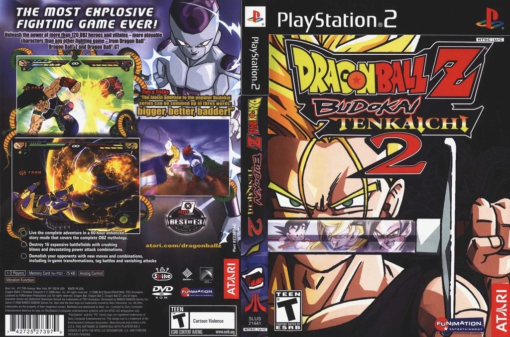
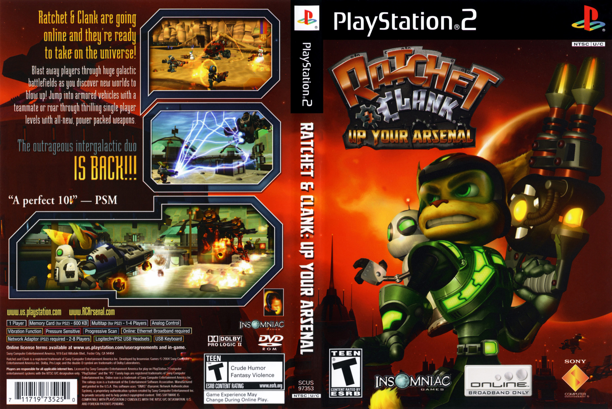

Mi infancia

Metal Gear Solid 3: Snake Eater
En plena Guerra Fría, Naked Snake es enviado a una peligrosa misión en la jungla soviética para rescatar a
un
científico desertor y desmantelar una nueva arma nuclear. Sin embargo, su misión toma un giro inesperado
cuando su mentora, The Boss, lo traiciona y se une a la Unión Soviética. Ahora, Snake debe infiltrarse en
territorio enemigo, enfrentarse a la legendaria Unidad Cobra, y detener al despiadado Coronel Volgin antes
de que inicie una crisis nuclear. En el proceso, descubrirá la verdad sobre la lealtad, el sacrificio y el
nacimiento de la leyenda de Big Boss.

Dragon Ball Z: Budokai Tenkaichi 2
Es un juego de pelea y acción basado en el universo de Dragon Ball, donde
los jugadores reviven las sagas más icónicas del anime, desde la llegada de Raditz hasta los eventos de
Dragon Ball GT y algunas historias de las películas.
El modo historia, "Camino del Dragón", permite explorar el mundo de Dragon Ball a través de batallas
dinámicas y cinemáticas fieles a la serie. Con más de 100 personajes jugables, fusiones, transformaciones y
escenarios destructibles, el juego ofrece combates intensos en un entorno completamente tridimensional,
consolidándose como uno de los títulos más completos y fieles a la franquicia.

Ratchet & Clank: Up Your Arsenal.
Ratchet y Clank deben regresar a su planeta natal, Veldin, que está siendo atacado
por las fuerzas del despiadado Dr. Nefarious, un villano robótico que planea erradicar toda forma de vida
orgánica en la galaxia. Para detenerlo, Ratchet se une a los Rangers Galácticos liderados por el egocéntrico
Capitán Qwark, quien tiene una historia personal con Nefarious.
A lo largo del juego, los jugadores explorarán diversos planetas, desbloquearán un arsenal de armas
mejorables y participarán en intensas batallas contra los secuaces del villano. Con una combinación de
humor, acción y plataformas, Up Your Arsenal se convierte en una de las entregas más icónicas de la saga.